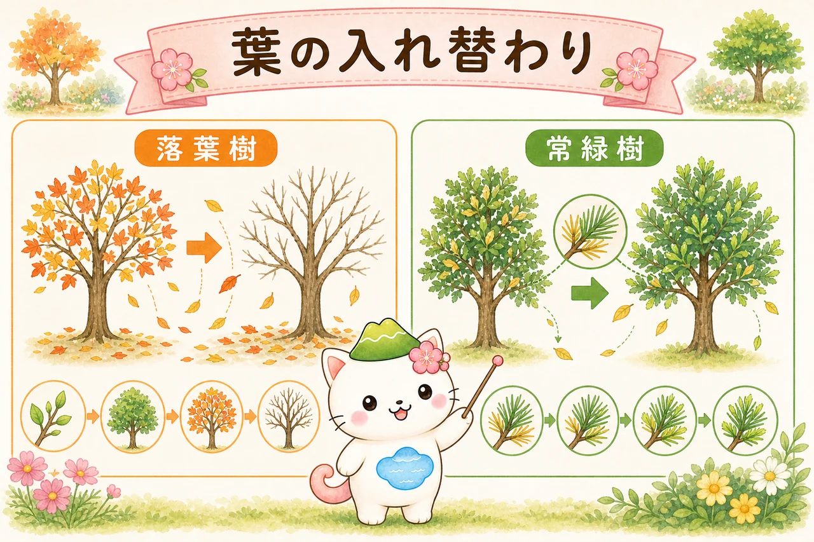
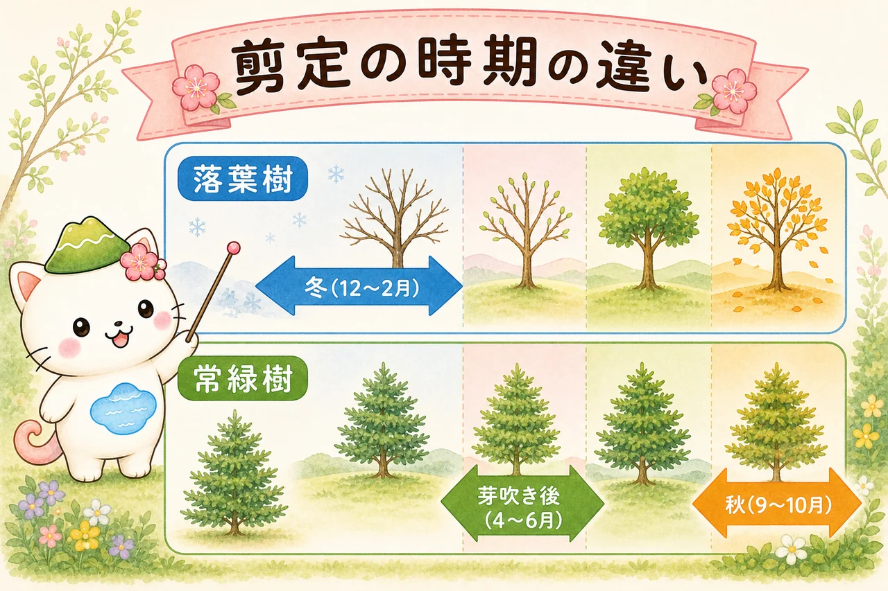
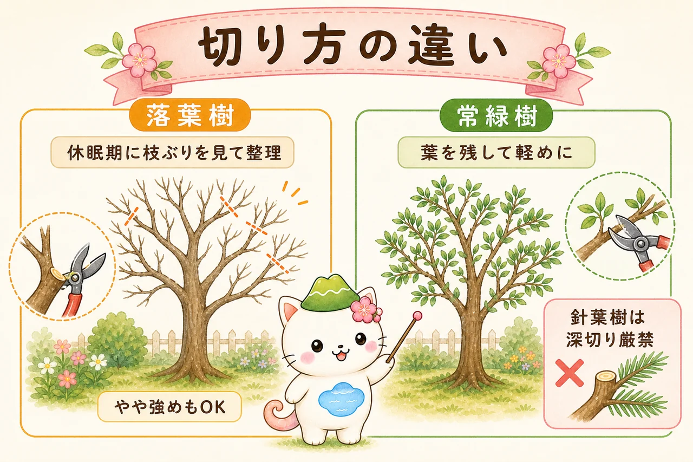
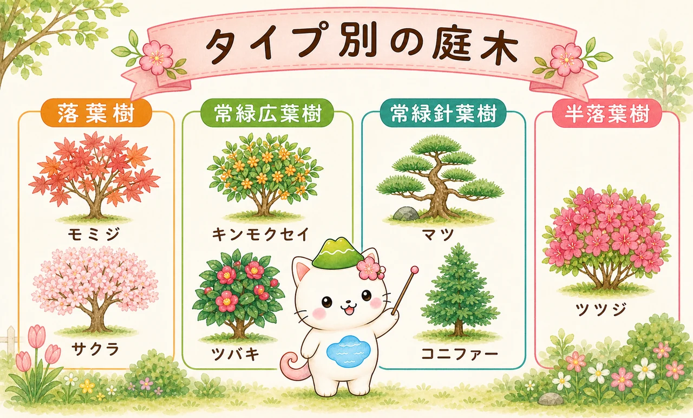

常緑樹と落葉樹って、何がちがう？
いちばんの違いは、冬に葉があるかどうかです。
落葉樹は、秋になると葉を一斉に落とし、冬は枝だけの裸の姿で休みます（休眠）。春になるとまた新しい葉を芽吹かせます。常緑樹は、一年中緑の葉をつけています（葉はまったく落ちないわけではなく、少しずつ入れ替わります）。
ちなみに、暖かい地域では常緑、寒い地域では落葉する「半落葉樹」もあります（ヤマツツジやアベリアなど）。


見分けるなら冬がチャンス。葉をつけたままなら常緑樹、枝だけになっていたら落葉樹だよ。お庭の木がどっちかで、手入れの仕方が変わるんだ。
葉の入れ替わりのしくみ
「常緑樹は葉が落ちない」と思われがちですが、正しくは少しずつ入れ替わっているだけです。古い葉は2〜3年ほど働いたあと、新しい葉と交代して落ちていきます。だから常緑樹の足元にも、季節によっては落ち葉がたまります。

落葉樹は秋に一斉に葉を落として冬を越し、春にまとめて芽吹きます。常緑樹は、新しい葉が出たあとに古い葉が落ちる、というゆるやかな交代をくり返します。この違いが、手入れの時期にも関わってきます。
剪定の時期がちがう
手入れでいちばん差が出るのが剪定の時期です。木のリズムに合わせるのが基本です。

落葉樹は「冬の休眠期」が基本
葉を落として休んでいる12〜2月ごろが、落葉樹の本格的な剪定の適期です。葉がないので枝ぶりが見やすく、どこを切るか判断しやすいのが利点。木の活動が止まっているので、太枝を整理しても負担が小さくてすみます。
常緑樹は「芽吹き後〜初夏」と「秋」
常緑樹は冬も活動しているため、厳寒期に強く切ると寒さで傷みます。新芽が伸びて落ち着いた4〜6月ごろと、暑さがやわらいだ9〜10月ごろに整えるのが基本。真夏・真冬の強い剪定は避けます。
ざっくり覚えるなら「落葉樹は冬、常緑樹は初夏と秋」。ただし花の咲く木（花木）は、常緑でも落葉でも“花が終わったらすぐ”が安全だよ。
剪定の「強さ」と考え方がちがう
切る時期だけでなく、どれくらい切ってよいかもタイプで変わります。

落葉樹は「休眠期なら強めの整理もしやすい」
落葉樹には芽を吹く力（萌芽力）が強い種類が多く、休眠期であれば、込み枝の整理や切り戻しによる更新にも比較的よく耐えます。冬のあいだに骨格づくりや透かしをして、春の芽吹きにつなげます。とはいえ切りすぎは禁物。一度に全体の1/4〜1/3までが目安です。
常緑樹は「葉を残して」軽めに
常緑樹は葉で一年中養分をつくっているため、葉を一気に減らすと弱ります。特にマツやコニファーなどの針葉樹は、葉のない古い枝から芽を吹き戻しにくく、深く切ると枝先が枯れ込みます。常緑樹は「葉や若枝を残して、少しずつ」が基本。生垣や玉ものの刈り込みも、萌芽力のある種類に向く作業です。
- 落葉樹：冬に枝ぶりを見ながら、込み枝・徒長枝を整理。更新の切り戻しもしやすい。
- 常緑樹（広葉）：芽吹き後・秋に、葉を残して軽く。刈り込みは萌芽力のある種で。
- 常緑樹（針葉）：葉のない所まで切らない。マツは「みどり摘み・もみあげ」が基本。
針葉樹の代表・黒松の手入れは 黒松の剪定 で、切り方そのものの基礎は 剪定の基本 でくわしく解説しています。
水やり・肥料の違い
目に見えにくい部分ですが、水と肥料のリズムも少し変わります。
肥料の時期
落葉樹は、休眠中の12〜2月に「寒肥（かんごえ）」として元肥を与え、春の芽出しに備えます。常緑樹は、活動を始める春（芽吹き前）と秋に与えるのが基本です。どちらも与えすぎは徒長や軟弱の原因になるので控えめに。
冬の乾燥に注意（とくに常緑樹）
落葉樹は冬に葉がないため、水分の蒸散はわずかです。一方、常緑樹は冬も葉から水分を失い続けます。乾いた冷たい風（寒風）に当たると葉焼け・乾燥害を起こすことがあり、特に植えたての常緑樹は注意。極端に乾く時期は、土の様子を見て水を補い、寒風の当たる場所では風よけも有効です。
タイプ別・代表的な庭木
お庭の木がどのタイプか、代表例で確かめてみましょう。

- 落葉樹：モミジ、サクラ、ハナミズキ、アジサイ、ジューンベリー など。
- 常緑広葉樹：シマトネリコ、キンモクセイ、サザンカ、ツバキ、シラカシ など。
- 常緑針葉樹：マツ、コニファー（ゴールドクレスト等）、イヌマキ など。
- 半落葉樹：ヤマツツジ、アベリア など（暖地では葉を残しやすい）。
木の名前から特徴を調べたいときは プラント アニマルズ、似た木で迷ったら 似てる木の見分け方 もどうぞ。
まとめ
常緑樹と落葉樹は、「冬に葉があるか」という違いから、手入れの時期も切り方も変わります。落葉樹は冬の休眠期に枝ぶりを見ながら整理、常緑樹は芽吹き後・秋に葉を残して軽めに。針葉樹はとくに深切りを避けるのがポイントです。
まずは、お庭の木が常緑か落葉かを確かめるところから。タイプがわかれば、適期も切り方も自然と決まってきます。切り方の基礎は 剪定の基本、その理由は 植物ホルモンと剪定 でどうぞ。